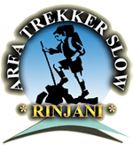

Our Profile
Arfa Trekker Slow is a group of climbers who offer services in guiding climbing Mount Rinjani, although somewhat new in the digital or online world but long before Arfa Trekker Slow has almost hundreds of times to climb, this is the positive value that we offer to the conquerors of the mountain, Because with trekker-trekker reliable and experienced course risks in the climb can be minimized so that the climbers can enjoy the beauty of each climbing step on Mount Rinjani.
Arfa Trekker Slow is already ingrained with Mount Rinjani because the guides in our group are the native men born under the foot of Mount Rinjani, so not one of Mount Rinjani is the second house for them.
During the climb Arfa Trekker Slow has been able to deliver hundreds or even thousands of climbers to the top of Mount Rinjani which reached a height of 3. 726 meters, the guided climber came from various regions both domestic and foreign countries.